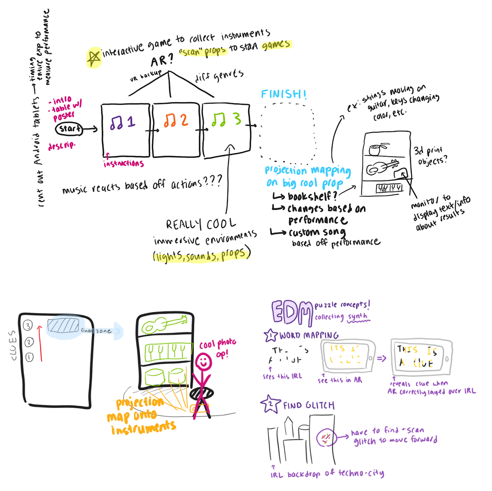

🔗Maryland Today: "Summ-AR Immersion"



Arti Dhareshewar - Artist
Fiza Mulla - Sound Designer
Tools: Unity, C#, Arduino, Madmapper
It is an immersive, "escape-room" experience based primarily on augmented reality interactions. There are 3 sections, each themed around different musical genres: jazz, EDM, and pop. Players travel through each room, solving clues by using a tablet and other technology to interact with their physical environments, helping them earn an instrument from each section. This culminates in a final projection-mapped display where players can see the instruments they've collected along with their winning trophy.
- Implement AR image tracking and recognition
- Implement general game functionality
- Design and implement UI
- Process sound input with Adafruit Circuit Playground & Arduino code, which is then used in conjunction with a C# script to produce resulting output in Unity
- superstAR logo and animation
- EDM character
- Misc. elements (ex: music note frame)
- Use game design skills to ideate various clues and puzzles
- Design and implent the finale projection-mapped display using MadMapper
- Arrange props and lighting to make each section more immersive
- Create planning documents, including concept art, initial sketches, project timeline, and task distrubtion
- Playtest and present progress regularly to incubator team
- Facilitate two-day showcase at arts festival